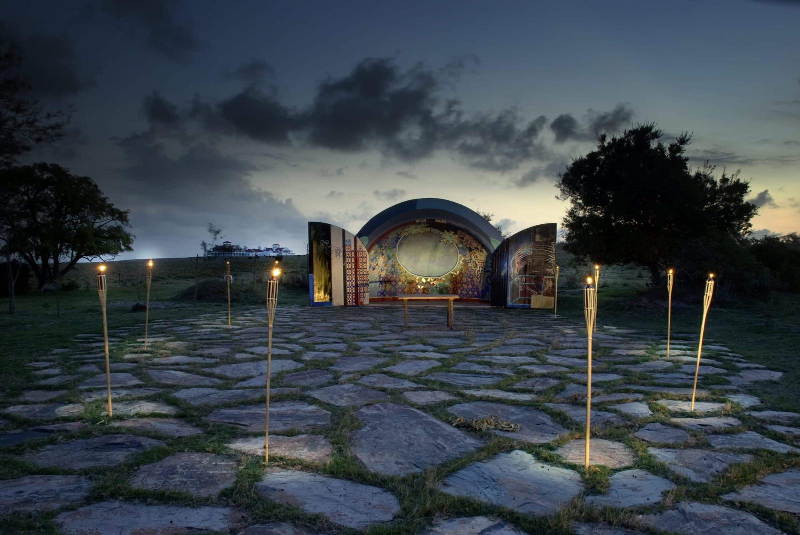
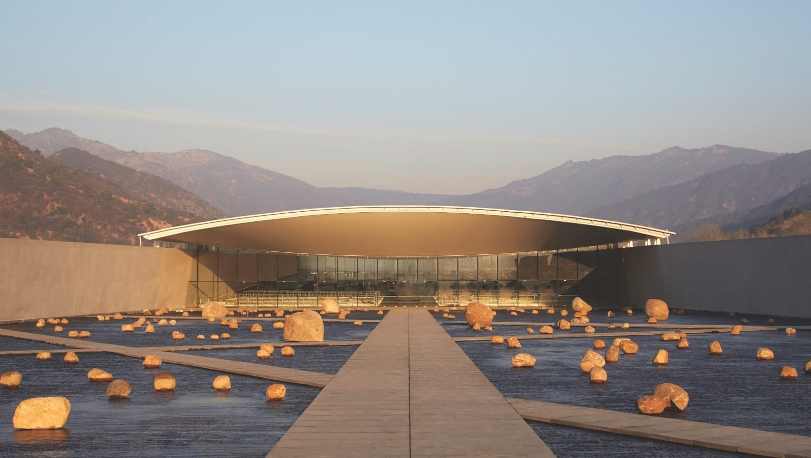
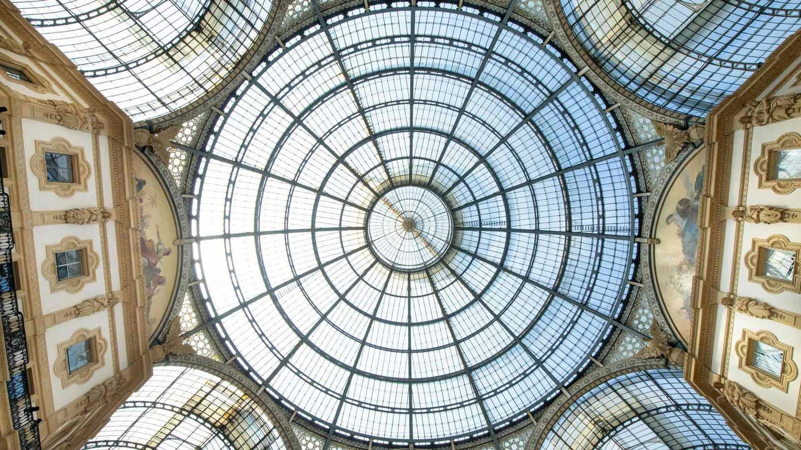
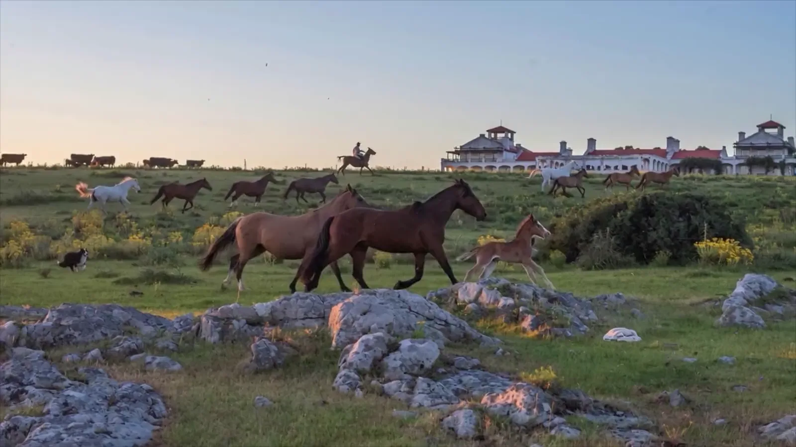
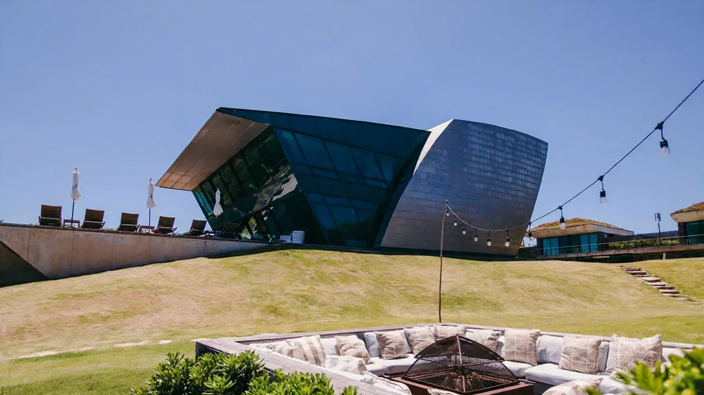
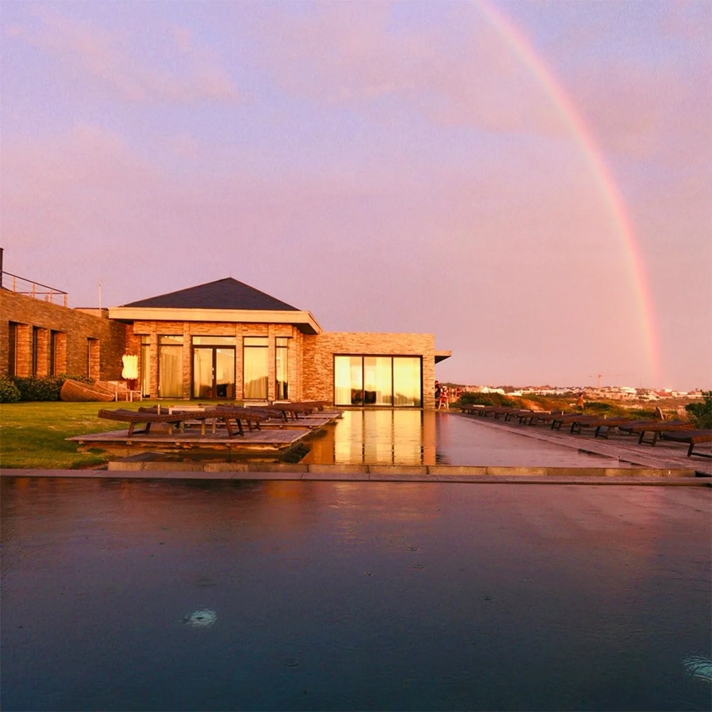

Uruguay · Italy · Chile
Six places, and one way of building.
A valley in Chile, a headland in Uruguay and an arcade in Milan. Each was handed to architects, artists and craftspeople as a landscape to answer — which is why no two of them look like each other, and why all six are unmistakably the same house.
Two countries, six front doors.

Retreat 01 · José Ignacio, Uruguay Estancia VIKFour thousand acres, horses and open fire. The Uruguay that existed before the coast was found.

Retreat 02 · José Ignacio, Uruguay Playa VIKCarlos Ott architecture and a serious collection, with the Atlantic on three sides of the house.

Retreat 03 · Playa Mansa, Uruguay Bahía VIKDesign bungalows set into the dunes on the calm side. The most social of the three.
Milano, Italy Galleria VIKEighty-nine rooms inside the Galleria Vittorio Emanuele II, each one signed by a different artist.
Millahue, Chile VIK ChileEleven thousand acres in the valley where the whole thing started. A titanium roof over the vines.
 Millahue · Colchagua, Chile
VIK Wines
Millahue · Colchagua, Chile
VIK Wines
The wines that run through every list, every pairing and every cellar in the group.

Built the way a
work of art is built.
VIK began in the valley of Millahue in Chile and reached the Uruguayan coast at José Ignacio, where three retreats now sit within twelve kilometres of one another. Each was given to architects, artists and craftspeople as a landscape to answer. Nothing here is a template applied to a site.

Two countries, on the map.
Every VIK place, from the Colchagua valley in Chile to the Uruguayan coast. Touch a name to fly the map.
If you want the coast, and three houses within twelve kilometres
If you want the valley, and eleven thousand acres of vines
If you want the city, and an arcade with a glass roof
Then pick a country.
guestexperience@vikretreats.com